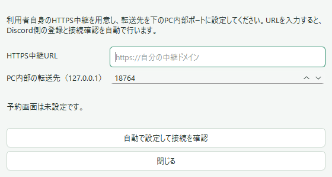

詳細説明書の目次
追加の予約Web画面・HTTPS接続
標準カレンダーとの違い、HTTPS中継、接続確認、設定に失敗した場合
標準カレンダーだけならHTTPS設定は不要
Discordの「予約・日時変更」から日付ボタンと時・分を選ぶ標準カレンダーは、追加のHTTPS接続なしで使えます。通常の予約のために、このページの設定を先に行う必要はありません。
追加の予約Web画面は、Discord内の別画面で予約を行うためのオプションです。本文・公開条件が取り込み済みで、記事が要確認状態ではなく、追加画面の接続確認も済んでいるときに利用します。
追加画面に必要なもの
- PCで起動中のnoteストックと、設定済みで有効なDiscord連携。
- 自分が管理する公開HTTPSの中継URL。
- そのURLから、このPCの内部ポートへ転送する設定。
- 設定するBotのDiscordアプリ情報。
アプリは入力されたURLのDiscord側登録と接続確認を補助します。公開HTTPSのURL自体や中継サービスの契約・起動を、標準セットアップが自動で用意する機能ではありません。
PCでURLと内部ポートを設定する


- 「Discord・セットアップ」→「追加設定：予約用Web画面の接続」を開きます。
- 「HTTPS中継URL」に自分の中継URLを入力します。
- 「PC内部の転送先（127.0.0.1）」を中継の転送先と一致させます。初期値は18764です。
- 「自動で設定して接続を確認」を押します。
- 表示されるDiscordの設定画面を進め、完了・接続確認の結果を待ちます。
URLは自分の中継のルートURLを使います。他のサービスへつながるURLや、同じPCの違うサービスを指す転送先では確認を通りません。設定したポートは1024〜65535の範囲です。
接続確認で何を確かめるか
HTTPS中継が、現在のPCの予約サービスへ届くことを確認します。ページが何か表示されるだけでは、このアプリの接続確認が成功したことにはなりません。
PC内だけでなく、Discordから使うHTTPSの接続経路が必要です。PC・アプリ・中継が停止していると利用できません。中継URLを変えた後は再確認します。
設定後に予約する
- Discordで対象記事を開き、本文・公開条件を確認します。
- 「予約・日時変更」を押します。
- 追加画面が開いた場合は、その画面で日時を選んで確定します。
- 結果と予約一覧に登録された記事・日時を確認します。
記事の取り込み状態や追加画面の設定条件を満たさない場合は標準カレンダーを使います。追加画面が開かなかったことだけで、予約機能すべてが使えないとは判断しません。
接続・登録が失敗するとき
| 表示・症状 | 確認すること |
|---|---|
| 先にDiscord連携を有効に | Discordタブの連携チェックと接続状態 |
| 先にBotセットアップを完了 | Botの導入と、アプリ情報が保存されているか |
| HTTPS中継がこのPCを指していない | URL・転送先のポート・中継の起動・別サービスへの誤転送 |
| 設定中のまま | 表示されたDiscordブラウザーに本人操作を求める案内がないか |
| 別の拡張が使用中 | 共有している接続先を、使用中のまま切り替えようとしていないか |
遠隔再ログイン拡張の設定ボタンは現在のPC設定画面では非表示です。通常のnoteログイン復旧はPCの「ログイン・接続確認」を使ってください。追加の予約画面の説明を、遠隔再ログイン拡張の導入手順と混ぜないようにします。